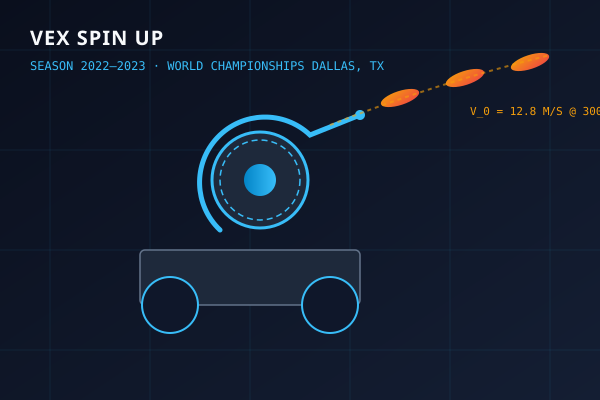
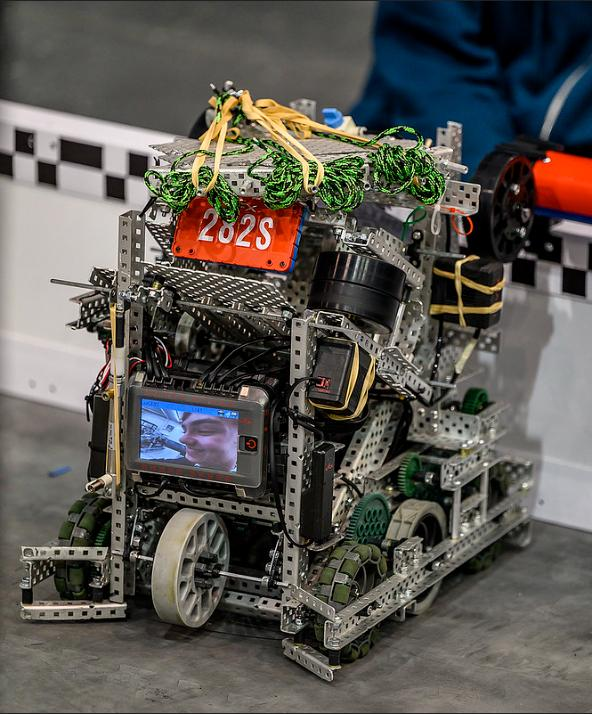

Flywheel Kinematics & Trajectory Control
Spin Up presented an intense ballistic challenge: rapid shooting of high-density foam discs into elevated high-goal baskets from dynamic match coordinates across a 12ft field.
Engineered a 36:1 compound gear reduction driven by dual 11W brushless DC motors. Implemented closed-loop velocity PID control to recover launch velocity in under 80ms between shots.
MECHANISM HIGHLIGHTS
- Compound Flywheel: High-speed 3000 RPM wheel with steel ballast weights to store kinetic energy.
- Actuated Deflector: Pneumatic angle hood shifting trajectory between high-basket shots and cross-field snipes.
- Chain-Driven Intake & 4-Bar: Rapid disc collection direct from floor tiles and match loaders.
- Pneumatic Endgame: High-velocity string projectile launch covering 40+ field tiles.
Design Evolution: V1 Fixed-Hood Prototype vs V2 Nationals & Worlds Rebuild
Early regional tournaments exposed critical limits in shot dispersion, velocity recovery time, and trajectory versatility, prompting a complete launcher teardown and major rebuild leading up to Nationals and Worlds in Dallas.
Initial design featured a single-stage spur gear flywheel with a fixed-angle compression hood lined with foam padding, accompanied by a simple top-roller intake.

- Fixed Trajectory Arc: Locked the robot to a single shooting distance, forcing precise repositioning under heavy defensive ramming.
- High Energy Sag: Insufficient flywheel rotational inertia caused ~350ms recovery time between consecutive shots, losing 3-disc burst cycles.
- Foam Degradation: Static foam backing suffered permanent compression set after repeated matches, creating high shot dispersion.
- Gear Ratio: 25:1 spur gearing without ballast mass.
- Velocity Recovery: ~350 ms per disc.
- Hood Construction: Fixed foam-backed aluminum.
- Intake: Single-stage top roller with indexing jams.
Completely redesigned launcher and intake architecture: implemented 36:1 compound gearing, high-inertia steel ballast flywheel, dual-state pneumatic angle deflector hood, and a 4-bar chain-driven intake.

- Pneumatic Variable-Angle Deflector: Dual-cylinder actuated deflector hood allows instant switching between steep close-range arcs and flat cross-court snipes.
- High-Inertia Steel Ballast: Integrated machined steel weight to store rotational kinetic energy ($E_k = rac{1}{2} I \omega^2$), slashing recovery time.
- Spring-Loaded Polycarbonate Hood: Dynamic constant-force compression eliminating shot dispersion.
- RPM Recovery Time: 350ms → < 80ms (sub-second 3-disc burst).
- Shot Dispersion: Reduced by 65% across 12ft range.
- Endgame Expansion: High-velocity string covered 40+ tiles.
- Global Standing: Represented Team UK at the World Championships.
Representing Team UK in Dallas, Texas
Led mechanical CAD modelling and physical prototyping, earning 22 total regional/national awards and representing the UK at the World Championships in Dallas, Texas, competing among the top 800 teams globally.